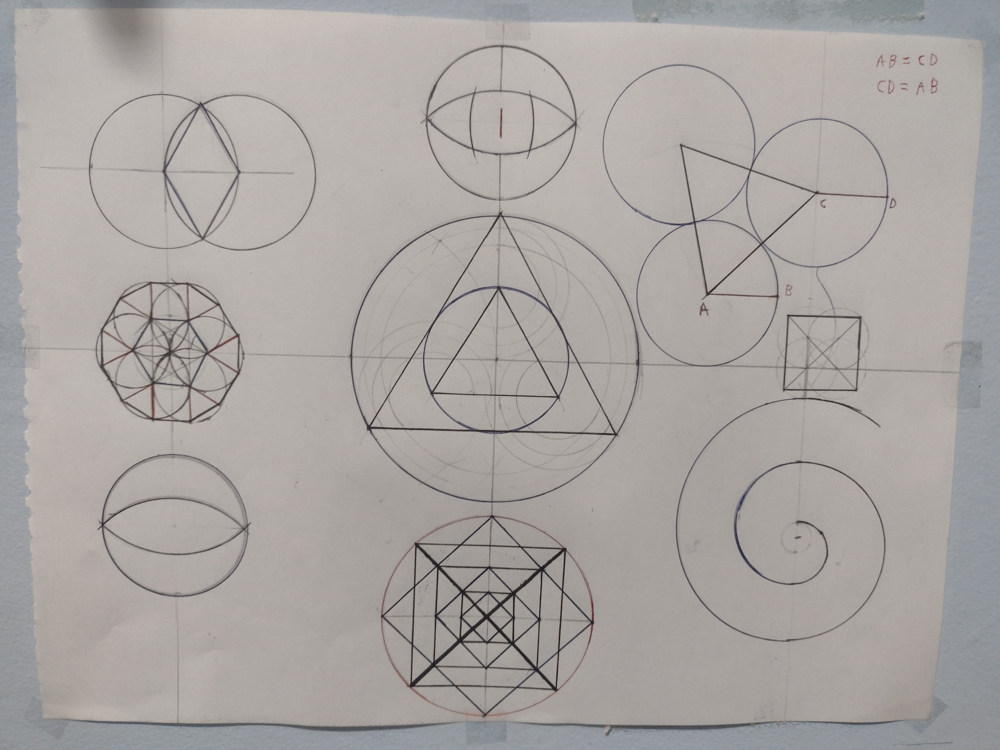
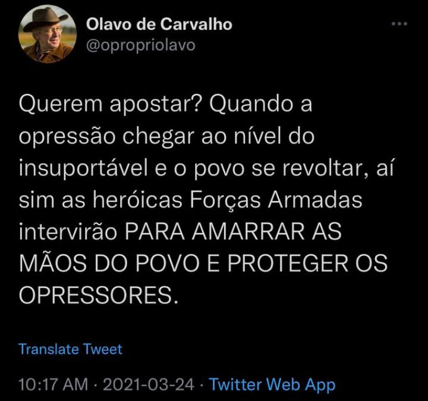

Edubook
Apresentado por Eduardo Kenji Takemoto

Eduardo Kenji
2/12/2022
11:42 AM
Um breve resumo sobre as informações essenciais do comunismo
1) Lenin foi o grande fundador DO Partido Partido Comunista da União Soviética (PCUS), como pode-se constatar na letra do hino soviético
2) Karl Marx foi o maior teórico comunista e praticamente o criador do comunismo, e aqueles que seguem sua linha ideológica chamam-se marxistas
3) Antônio Gramsci, teórico comunista, criou ideias radicais para a implementação do comunismo, como a ideia de que seguida a sua fórmula todos seriam socialistas e não saberiam, referindo-se a manipular as pessoas sem que saibam por meio do marxismo cultural
4) O gramscismo prega que para a implementação do comunismo o movimento não tem tomar o exército, por exemplo, mas sim a cultura, dominar as escolas e universidades, os canais de comunicação, jornais, etc.
5) Comunismo e socialismo são basicamente a mesma coisa, mas no comunismo não há estado. O comunismo em si tem se desmoralizado entre os próprios marxistas, mas o socialismo continua-lhes viável
6)O candidato à presidência pelo PT Lula criou, em 1990, o Foro de São Paulo, organização que une os países esquerdistas da América Latina, incluindo ditaduras, grupos narcotraficantes e até mesmo terroristas farc(Forças Armadas Revolucionárias Colômbia). Dizem muitos teóricos que este foro seria utilizado para juntar toda a América Latina em uma grande nação socia, a criação de uma "patria grande", uma nova mãe russia, comandando o esquema comunista globallista única"", com uma mesma moeda e sem fronteiras. Sabe-se que já que Lula defende a criação da moeda única para toda a América Latina
7) O termo "revolução" quase sempre é usado se referindo ao comunismo, pois o comunismo só pode ser implementado, segundo dizem, por meio de uma grande revolução, que mudaria todo o sistema
8) O comunismo funda-se na teoria da luta de classes, onde, segundo karl Marx, um dia o proletariado se revoltará contra os burgueses e tomarão os meios de produção(fábricas), instituindo assim a ditadura do proletariado
9) Lumpenproletariado(também nomeados de "lumpenproletariat") são aqueles que nada contribuem para a produção, dedicados a atividades marginais, como prostitutas, ladrões, etc.
10) O Muro de Berlim, oficialmente Muro de Proteção Antifascista, foi uma barreira física construída pela Alemanha Oriental durante a Guerra Fria, que circundava toda a Berlim Ocidental. Era parte da fronteira interna alemã. Um lado do muro era capitalista(alemão) e outro comunista(russo). Quando derrubaram o muro os orientais(do lado comunista) correram para o lado ocidental(capitalista).
11)Usando estimativas não oficiais, apresenta um total de mortes que chega aos 94 milhões. Já o nazismo causou apenas 6 milhões de mortes. Todavia, muito pouco se fala dos crimes do comunismo, até mesmo na escola.
Eduardo Kenji
2/12/2022
9:18 AM
Comentários ao hino comunista
O hino da União Soviética(berço do comunismo) é a pura definição de hipocrisia, toda hora se repete as palavras "liberdade" e "triunfo do comunismo", mas essas palavras são manifestamente antagônicas(parece até os petistas se dizendo "a favor da democracia"). Além de "a grande Rússia selou para durar para sempre", quando há tempos a união soviética foi derrubada, embora em verdade o comunismo não o tenha sido, diferentemente do que crê as massas.
A quem queira ver uma tradução do hino da URSS(União Russa Socialista Soviética), que por sinal é sobremaneira bem feito e agradável aos ouvidos(embora não à mente), aqui esta o link:
Clique aqui
Eduardo Kenji
1/12/2022
6:25 PM
Eles dizem "viva a democracia", mas não trazem transparência para as eleições, calando a quem duvide das urnas e apresente provas de suas vulnerabilidades. Que democracia é essa?
Etimologicamente, o termo "democracia" origina-se do grego antigo δημοκρατία (dēmokratía ou "governo do povo"), que se cria a partir de δῆμος (demos ou "povo") e κράτος (kratos ou "poder"). Onde censurar o povo e impedi-lo de votar com confiança que seu voto será computado significa dar poder ao povo?
Eduardo Kenji
1/01/2023
12:15 AM
Feliz ano novo, seus lunáticos! Espero que o papai noel faça deste ano vindouro meramente bom, pois bom mesmo é impossível com o Lula na presidência. Meu desejo para este ano é que o PT acabe e que o presidente Bolsonaro volte à presidência da república. Também desejo que todos nós não soframos demasiado este novo ano, e que a todos venha a prosperidade, felicidade, amor, esperança, e todos os atributos que um ser humano precisa para ser considerado bom. Espero também que 2023 seja menos ruim que 2022(nota-se o "menos ruim", em lugar de "melhor"). E, ademais, digo a vós que aproveitem enquanto ainda podem ser feliz. Feliz ano novo!!!

Eduardo Kenji
31/12/2022
9:06 AM
Amanhã já é ano novo, não sei se fico feliz ou entro em depressão, parece que ontem mesmo era 2020 e eu estava feliz da vida pela escola ter fechado por causa do Covid. Não sei se é coincidência ou o que, mas todo mundo está assim, todos parecem não perceber que se passaram 3 anos desde 2020. Estranho.
Eduardo Kenji
30/12/2022
5:58 PM
Entre colocar um engraçaralho pra cadinho que fez umas duas piadas ácidas sobre a covid, e muitas outras falas que foram tiradas de contexto para fazê-lo parecer, e um ladrão condenado em várias instâncias, o lógico é escolher o engraçaralho porra! Mas hoje em dia as pessoas estão muito sensíveis, elas tem medo de palavras mas não de ações. Você pode FODER ela, só não avisa ok?
Eduardo Kenji
29/12/2022
5:45 PM
Eu posto textos neste site todo dia, então eu não tenho tanto tempo para fazer um texto tão bem elaborado, mas é um sacrifício que faço, pois, se posto todo dia, quando estiver velho eu terei tipo um relatório do que eu estive pensando em cada dia da minha vida desde que comecei este site. Além disso, também terei um grande leque de ideias para aprofundar quando eu quiser, pois cada texto tem uma ideia(e as vezes acontecimentos e outras coisas de menor importância), daí, se eu precisar de um tema para uma redação de português, eu tenho. De vez em quando também me dá uma grande inspiração do nada e eu consigo escrever páginas sobre um tema complexo sem nenhuma dificuldade, mas de vezes em quando apenas. Ademais, quando eu tenho tempo eu modifico os textos passados, não mudando o tema(os textos originais estão no github, é meio difícil encontrar mas dá). Eu também privo alguns texto, mas somente se no mesmo dia tiver algum outro texto postado, para não perder sequência de dias postando, e só privo o que creio que estava errado ou era leviano
Eduardo Kenji
28/12/2022
12:58 PM
Demasiadas pessoas escutam seu "guru interior"(consciência) lhes dizer uma coisa, e a tv e todo show business lhes dizem o mesmo, aí elas pensam estar corretas sem nem ao menos começar um raciocínio lógico mais aprofundado. (ou mesmo uma simples inferência lógica, como 1+1=2) A tv lhes valida um pensamento, sem que se faça necessário um raciocínio lógico, sem um pensamento crítico
Eduardo Kenji
27/12/2022
6:22 PM
Fazer esses desenhos geométricos é o melhor passa-tempo do mundo, é muito legal

Ps. A imagem ficou meio deturpada ao passar para o site, mas acredite, esses triângulos são equiláteros
Eduardo Kenji
26/12/2022
7:12 PM
Desculpem-me o maquiavelismo, mas a melhor coisa do mundo é ver alguém caminhando para o abismo por escolhas idiotas, das quais todos a advertiram do perigo, na maior plenitude de quem nada sabe da própria ruina
Eduardo Kenji
25/12/2022
12:15 AM
Feliz natal a todos! Espero que Deus abençoe a cada um de vossas mercês
Eduardo Kenji
24/12/2022
5:05 PM
"A democracia acaba onde começa o comunismo"
Eduardo Kenji
23/12/2022
2:52 PM
Continuando a série de ditados populares incompletos, esse negócio de que cada qual tem sua metade da laranja é somente meio correto. Em verdade, há três variáveis que devem ser acrescentados nisso: cada metade da laranja tem seu cheiro, sua parte exterior e, por fim, a parte interior. Nessa analogia, a parte exterior seria a APARÊNCIA(física) da laranja; a interior seria o que a laranja REALMENTE É; e o cheiro seria o que a laranja PARECE EM VERDADE SER. Por exemplo: laranja bonita por fora mas com cheiro ruim, mesmo dentro sendo boa, é suspeita, pode estar estragada.
Eduardo Kenji
22/12/2022
5:58 PM
Hoje é dia 22 e o presidente novamente abriu as portas do Alvorada, bem capaz de ter uma grande mensagem para passar ao povo
Eduardo Kenji
22/12/2022
5:58 PM
A melhor forma de decorar o número de pi é colocá-lo como senha do seu celular, depois de um tempo fica fixo na sua mente e você nunca mais esquece. Acho que vou tentar fazer isso com a proporção áurea, deve funcionar também
Eduardo Kenji
21/12/2022
7:20 PM
Descubri hoje que terei um novo irmão unilateral. Interessante. Só espero que dessa vez venha homem, já tenho duas irmãs e nenhum irmão.
Eduardo Kenji
20/12/2022
6:44 PM
O maior erro do socialismo é ter um nome tão bonitinho. Poderia eu falar que o maior erro são as mortes e a pobreza, mas pensando bem se o nome não fosse tão bonitinho talvez não houvesse trouxa para apoiar sua implementação. Deveria ser algo como "pobrecismo"
Eduardo Kenji
19/12/2022
1:17 PM
Quanto mais distante, mais os pequenos detalhes desaparecem. Isso funciona com tudo, até com o que não é imagem, como o tempo(pois quanto mais no passado - ou no futuro - menor a visibilidade dos detalhes de um evento, acontecimentos(pois, quanto mais longe de um acontecimento, menor os detalhes que lhe chegaram ao conhecimento), etc.
Eduardo Kenji
18/12/2022
2:10 PM
Se o presidente for fazer algo, provavelmente fará nos próximos 3 dias. Se depois desse tempo ele não fizer nada, há de se pensar que as coisas estão difíceis para nós. Estamos na reta final...
Eduardo Kenji
18/12/2022
11:48 AM
Devíamos trocar a palavra "respeito" por "tolerância". Não se deve ter respeito pelo que se crê estar errado, mas tolerância. Devemos ter tolerância por todas as pessoas, mas respeito só devemos ter por algumas. A tolerância só finda onde começa a violência. Eu, por exemplo, não tenho respeito pela ideologia lgtv(pois Deus só criou o homem e a mulher, e, pior, a militância gayzista é ridícula), mas tenho tolerância por quem o seja(não pela ideologia, pois é uma ideologia demasiado pueril e ignóbil, mas pelas pessoas, claro), se vejo um na rua eu não agrido, xingo, ou mesmo trato diferente(quem o faz é maluco extremista). Por que diabos eu teria respeito(no sentido etimológico da palavra) pelo que eu acho errado?
Eduardo Kenji
17/12/2022
5:13 PM
O problema de falar sobre a manipulação psicológica global com as pessoas é que elas são todas manipuladas psicologicamente
Eduardo Kenji
16/12/2022
1:26 PM
As instituições escolares deveriam dar mais ênfase para o significado da palavra "democracia", tem gente que acha até hoje que "democracia" é sinônimo de "esquerdocracia"
Eduardo Kenji
15/12/2022
5:28 PM
O amor venceu...

Eduardo Kenji
15/12/2022
10:43 AM
Queria ter os neurorecepitores desse pessoal que ama futebol. Se eles regozijam-se tanto com pessoas correndo atrás de uma bola, eles nunca devem ficar tristes. Mas, eu não tenho muito direito para falar sobre isso, quando pequeno eu me alegrava em ver vídeos de youtubers jogando Minecraft
Eduardo Kenji
14/12/2022
6:35 PM
Existem pessoas dizendo que Bolsonaro já tem o que é preciso para a GLO, aguardemos.
Eduardo Kenji
14/12/2022
10:12 AM
Top 5 coisas que mais odeio:
1°Comunismo
2°Comunistas
3°Marxismo (ou comunismo do Karl Marx)
4°Socialismo(ou comunismo, mas com estado para te foder mais e com um nomezinho mais bonitinho)
5°Lulismo(ou socialismo velado, que é o mesmo que comunismo velado com estado)
Eduardo Kenji
13/12/2022
6:40 PM
Dizer que aqueles malucos terroristas são bolsonaristas é o mesmo que dizer que uma única mulher feminista que apoia direitos iguais (perante a lei) representa o movimento feminista todo(quando em verdade a grande maioria delas querem mais direitos para as mulheres), e, ademais, depois se descobre que há grande chance dessa única feminista ser um homem(hétero top, claro) infiltrado no esquema. Mesmo que alguma pessoa desses terroristas apoie o bolsonaro, não se pode dizer que bolsonaristas são terroristas, tem maluco doente mental em todas as ideologias, não podemos pegar meia dúzia e tê-la pelo movimento todo, ainda mais quando a maior parte do movimento está claramente contra esses atos, sendo que são constituídos mormente de famílias, idosos, crianças, patriotas.
Eduardo Kenji
12/12/2022
7:45 PM
A partezinha final de November Rain é bem épica, eu coloco a musica para tocar só para ouvir esta parte, é muito boa. Guns N'Roses se superou nesse final, consegue ser melhor que a música toda, e a música toda é muito boa.
Eduardo Kenji
12/12/2022
11:15 PM
Bolsonaro deixou a esplanada aberta para a entrada dos apoiadores, e dizem que até a Globo(também conhecida como rede esgoto) está lá. Ela vai fazer algum pronunciamento MUITO importante hoje.
Eduardo Kenji
11/12/2022
9:30 PM
Lugar de ladrão é na prisão. Até crianças sabem disso. Na brincadeira de polícia e ladrão, quem ia para a prisão era a polícia ou o ladrão?
Eduardo Kenji
11/12/2022
7:22 PM
Boa noite a todos vocês...

Eduardo Kenji
11/12/2022
5:36 PM
Será que vão mesmo diplomar o Nine amanhã? Eu realmente não sei, não duvido mais de nada. Mas ainda tenho esperança que as coisas se resolvam e o ladrão corrupto seja preso.
Eduardo Kenji
11/12/2022
5:36 PM
A estratégia é bem simples: você condena o uso de uma palavra inofensivo tanto quanto se condenaria um assassino de crianças, mas você não impede que as pessoas a usem, daí, com o tempo, as próprias pessoas irão proibir umas as outras de a usarem, gritando histericamente contra todos que a usem, e, somente aí, você bane a palavra mesmo, mas lembre-se de dizer que se está banindo um ofensivo disparate grotesco, intolerante e racista (mesmo que a palavra não seja racista você arranja alguma forma de utilizar esse adjetivo. Contudo, palavras que se refiram a preconceito com outras minorias também servem), e pronto, você baniu uma palavra do vocabulário de todo um povo e agora está apto para implantar sua ditadura, onde as pessoas não teram como reclamar, pois não teram palavras para e expressar a indignação e perderam completamente o respeito se usarem das palavras malignas que outrora repudiaram com veemente repugnância. O segredo é tão somente fazer as coisas aos poucos para dar tempo para a população se acostumar com sua decisão e ela lhes parecer normal, e mesmo ética. É como aquele mito que diz que tomando um pouco de veneno de cobra todo dia você cria anticorpos e fica imune, mas nesse caso as pessoas ficam imunes a objeções e acabam se acostumando com a tirania.
Eduardo Kenji
10/12/2022
6:42 PM
Qual o nome do regime que proíbe o uso de palavras?
Eduardo Kenji
09/12/2022
10:18 PM
Se um raio cai no norte da costa rica no meio de uma floresta e ninguém vê nem filma, esse raio realmente caiu lá? Sim, claro que caiu, mas para a humanidade como um todo é como se não tivesse caído, uma vez que ninguém ficou sabendo.
Agora, se um raio cai no norte da costa rica no meio da floresta e alguém viu, mas falou para as outras que em verdade caiu no sul no meio da cidade, esse raio caiu no norte ou no sul? No norte claro, mas para as pessoas que ouvem esse senhor creem fielmente que caiu no sul, mesmo que em verdade tenha caído no norte.
A verdade não deixa de ser verdade só porque você não acredita.
Do mesmo modo, a crença não deixa de ser crença porque há uma verdade.
Eduardo Kenji
08/12/2022
8:12 PM
Acabei de gastar 2 reais sem querer, como alguém pode ser tão imbecil a ponto de gastar 2 reais SEM QUERER.
Eduardo Kenji
07/12/2022
6:12 PM
Relativismo é coisa de gentinha imbecil que quer ter permissão vip para fazer o que quiser sem esperar consequências. Uma pura irresponsabilidade bigodeira.
Eduardo Kenji
06/12/2022
9:40 PM
Os próximos dias serão decisivos para o futuro Brasil. Tenho confiança no presidente Bolsonaro.
Eduardo Kenji
06/12/2022
8:32 PM
Temos mais 5 dias para ativar o GLO, senão o fundador do Foro de São Paulo sera diplomado. Comunismo é uma praga, o exército é a única cura.
Eduardo Kenji
06/12/2022
5:08 PM
Logo começará a acontecer com os manifestantes o que eu chamo de efeito vibratória dispersivo aquático (evda). A lógica é bem simples: quando um objeto cai na água, por exemplo uma bola, a água passa a ter mais caos, jorrando água para todos os lados com várias ondas grandes, mas, com o passar do tempo, as ondas ocasionadas pelo objeto que caiu na água vão se dissipando até a água voltar a estar em repouso. O mesmo acontece com tudo, inclusive em manifestações. As manifestações tendem a cada vez mais aumentar, até que chega o pico de manifestantes, aí o número começa a abaixar, até que as pessoas esqueçam da manifestação. Se o Bolsonaro não tomar logo uma decisão, os protestos irão acabar em algumas semanas(Creio que dure no máximo 1 mês, caso o presidente não fale nada).
Eduardo Kenji
05/12/2022
8:40 PM
Quando a vida lhe parecer insignificante, lembre-se que existe gente que finge ser o que não é; que brinca de ser famoso e nisso tem sucesso; que em demasia ri dos outros e ainda assim têm mais que o trabalhador que pega chuva para ir trabalhar várias horas por dia. Sua vida não é insignificante, a dessas pessoas o são. Sempre que estiver se sentido mal, se compare com o modus operandi das massas, mas veja-as como em verdade o são, e assim verá como se fazem de luz quando em verdade são sujos e baixos.
Eduardo Kenji
04/12/2022
7:26 PM
A partir do momento que o presidente acionar o artigo 142(GLO) irá começar uma guerra no Brasil. Eu não estou falando de guerra interna contra petistas ou comunistas, mas uma grande guerra nas 10 fronteiras socialistas que tentarão tomar o país, além das favelas que irão se revoltar em peso. Temos inimigos dentro e fora do país. Caso ele acione, o Brasil, que sempre se absteve de guerra, terá de entrar em uma grande guerra contra narcotraficantes comunistas. Os países socialistas da América Latina e as Farc(Forças Armadas Revolucionárias da Colômbia) fazim parte do Foro de São Paulo. (organização que reúne partidos políticos e organizações de esquerda, criada em 1990 por Lula e Fidel Castro)
Eduardo Kenji
03/12/2022
8:08 PM
Gostaria muito de ver a Argentina jogar contra o Brasil. Eu nem gosto de futebol, mas abriria uma excessão para esse jogo. Deixando claro que eu torceria para a Argentina, apenas por causa do Fernando Cerimedo.
Eduardo Kenji
02/12/2022
6:48 PM
Eduardo Kenji
02/12/2022
5:22 PM
Ou o presidente aciona o artigo 142 ou tanto ele quanto o exército vão ficar irreversivelmente manchados como covardes e traidores da pátria. Além de que vão torná-lo inelegível e trocarão os comandantes do exército(ou comprarão)
Eduardo Kenji
01/12/2022
6:10 PM
Um estado totalitário precisa de militantes engajados e que sejam fanáticos a ponto de serem ilógicos.
Eduardo Kenji
30/11/2022
2:58 PM
O Partido da Causa Operária(em outras palavras, o partido comunista do Brasil) está criando um grande ativismo contra a censura. O que aconteceu com o mundo? Porque caralhos o partido comunista do Brasil está indo contra a censura? Que comunismo é esse sem censura? Alguma nova modalidade? De qualquer forma, isso é até bom, uma ala da esquerda indo contra a ditadura pode converter as outras alas. O importante é o pessoal de direita não sai se filiado ao PCO claro.
Eduardo Kenji
29/11/2022
5:46 PM
A China não é um capitalismo, mas também não é um socialismo. A China é um socialismo onde há grande exportação e avanço tecnológico. Prova disso que tudo hoje em dia é "made in China". Para um país que em tese seria socialista a China vende MUITO. Até mesmo a Apple utiliza de componentes chineses. Isso ocorre porque a China tem um trabalho quase escravo, ipso facto a mão de obra é tão barata.
Eduardo Kenji
28/11/2022
5:40 PM
A maior diferença entre Lula e Bolsonaro e que deveria ser definitiva nas eleições, mas não foi, é que:
Bolsonaro é acusado de ser idiota e não saber governar um país (ressalta-se o "acusado" e não "é um")
Lula é a acusado de ser ladrão, bandido, corrupto, quadrilheiro, socialista, etc (e, em verdade, o "acusado" não serve para alguns, se não todos, adjetivos usados na frase, uma vez que ele foi condenado em três instâncias e só saiu da cadeia por articulação dos "camaradas")
Eduardo Kenji
27/11/2022
8:02 AM
O mais revoltante dessa galerinha da "beautiful people"(ou, em português, as "pessoas maravilhosas") é que eles dizem que não podemos ter intolerância com quem é intolerante, ou, em outras palavras, não podemos ser bons com quem é mau. Mas quem define quem é mau e bom são eles, e quem não faz parte de seu grupinho acredita que eles que são maus (ou não bons), então, desta forma, todo mundo têm que ser intolerante com todo mundo, uma vez que todo mundo discorda um do outro, e crê que o outro está errado(em outras palavras mau ou não bom). A pessoa má é, para eles, a pessoa que não vê a verdade, a ignorante, mas quem garante que ela mesma não é a pessoa que está em erro? Porque o integrante da beautiful people não pode errar? Ele foi dotado da sapiência divina da onisciência?
Há 2 hipóteses para esta questão:
1)Essas pessoas acreditam que a verdade é aquela que concorda com o senso comum. Mas isso está errado na síntese, o senso comum discorda dela MUITO MAIS que aqueles que elas não toleram e além disso é falso essa narrativa de senso comum=verdade. Se o senso comum diz que o céu é verde, ele o será? Ademais, essas pessoas são a favor que combatamos com rigor os "disseminadores de fake news ", mas, uma vez que elas definem a verdade, isso é ipsis litteris censura contra os "intolerantes" e a favor da própria intolerância, o que não deixa espaço para o senso comum aprovar o outro lado, uma vez que o outro lado já é anulado a priori.
2)Ela é relativista. Não preciso nem dizer o problema disso, né? Se não há verdade, então não há bom ou mau.
3)Elas utilizam o conceito de duplipensar e creem que sabem o que sabem que não sabem.
Isso de "não devemos ter tolerância com os intolerantes" é só um jogo semântico usado para dar verossimilhança à frase. Esse mesmo jogo poderia ser usado desta forma: devemos matar quem mata, devemos assediar quem assedia, devemos escravizar quem escraviza, neste último se encontra a essência mesma desta falácia, uma vez que muito dizem que todos os brancos escravizaram os negros(mesmo os de hoje em dia, por causa do "rascismo estrutural" e "dívida histórica"), sendo que não é assim, do mesmo modo que dizem que todos os direitistas são intolerantes, quando em real não o são, sendo a esquerda até mesmo bem mais, com seu famoso "ódio do bem"
Eduardo Kenji
26/11/2022
8:26 PM
Ao que tudo indica, os oficiais superiores das três forças armadas estão com Bolsonaro, se ele quiser fazer algo ele faz, está com a faca e o queijo na mão, só resta a decisão de cortar. Além disso ele tem uma grande parcela do povo com ele, que é o maior poder, uma vez que todo poder emana do povo. É uma decisão muito extremista e difícil, ou ele dá o pais ao foro de São Paulo, ou cria uma desordem no país que durará alguns meses, além de radicalizar as pessoas centro e centro-esquerda.
Eduardo Kenji
25/11/2022
10:08 PM
Chega-se agora no cume. Quem ganha? O Foro de São Paulo ou o movimento reacionário?
Eduardo Kenji
25/11/2022
8:26 PM
Adquiri 8 livros nesta Black Friday, consegui aproveitar bem. Descobri que o Rasta, apresentador do programa "Rasta news" na Brasil Paralelo, tem uma livraria online com preços ótimos. Ele tem uma Black Friday verdadeiramente boa.
Eis a lista dos livros a que me refiro:
Memórias do subsolo
Quincas Borba
O jardim das aflições
A presença total
Regras da vida
O mínimo sobre bigodagem
O que há de errado com o mundo
A ladeira da memória
Eduardo Kenji
24/11/2022
9:38 PM
A vingança se faz melhor quando ninguém espera por ela. Do mesmo modo, a vitória é muito melhor quando todos creem na sua derrota. Talvez porque se mistura um pouco de vingança pelos que não acreditaram em você nessa vitória e porque você se mostra melhor que o outro ao contrário da vingança, que, geralmente você rebaixa o outro.
Eduardo Kenji
23/11/2022
7:20 PM
Em uma pátria pobre em cultura, política se ganha por meio de retórica, não com bons argumentos.
Um mau retórico pode dizer:
Eu aumentei os gastos públicos em agricultura em 28,90% e, ainda, consegui equilibrar o imposto do contribuinte por meio de investimentos em infraestrutura.
Já um bom pode dizer:
Eu investi 90mil reais em plantação de arroz pro meu povo não passar mais fome que nem no governo do primeiro candidato!
Em um país com grande taxa de analfabetos, as pessoas não ligam para infraestrutura, mas sim se vão ganhar algum auxílio do governo. Capaz de um povo agradecer um auxílio de 2.000R$ mesmo tendo um imposto médio de 10.000R$ por semana. Ou agradecer os 2mil mesmo com o pão a preço de 50 R$.
Eduardo Kenji
22/11/2022
8:25 PM
Sempre que for fazer uma pergunta embaraçosa, faça-a já afirmando. Por exemplo:
"Ei, é você não é a namorada do Pedro?"
Se a pessoa namora o pedro ela vai dizer que sim, mas, caso não, ela vai disser:
"Não, na verdade eu sou a namorada do João"
E assim você descobre que a pessoa tem namorado, e que o nome dele é João.
Eduardo Kenji
21/11/2022
10:36 PM
O modo mais eficaz de elevar sua alto estima não é, pasmem, ficar chorando, mas sim se aprimorar.
Eduardo Kenji
20/11/2022
11:38 AM
A melhor forma de não ficar maluco é saber rir mesmo da sua derrota; ter ciência que os outros podem estar muito felizes agora, mas que logo podem não esta mais; É ter ciência que sempre existirá alguém muito melhor e muito pior que você, e, por fim, que geralmente quem sempre se mostra muito bem em verdade está muito mal, mas consegue disfarçar a tristeza para os outros, só não consegue disfarçar para si próprio, pois ninguém é sempre feliz, e quem parece o ser, não raro, em verdade está tentando esconder uma grande tristeza.
Eduardo Kenji
19/11/2022
10:18 PM
Adquiri o OPL para o meu PS2 antigo. Estou agora esperando o Notebook passar algumas isos para o pendrive. Encomendei também um cabo HDMI e um conversor de entra de PS2 para HDMI, mas só o cabo chegou até agora, então estou tendo de jogar em preto e branco, imagem em baixíssima resolução e sem som, mas pelo que tudo indica o conversor chegará depois de amanhã.
Eduardo Kenji
19/11/2022
8:02 PM
A pessoa facilmente manipulável é aquela que prioriza a retórica à dialética e lógica.
Eduardo Kenji
18/11/2022
4:33 PM
Você sabe que a cultura de um país está ruim quando um socialista diz que nunca leu Karl Marx. Eu mesmo baixei o manifesto comunista no meu kindle, todavia, de acordo com a minha hierarquia de prioridades, ainda demorará um tempo para começar a lê-lo. Prefiro ler antes um livro de economia liberal, tipo um John Locke.
Eduardo Kenji
17/11/2022
2:33 PM
A democracia é falha, mas é a melhor dentre os sistemas de poder. Pelo menos a democracia é justa, se um povo elege um ditador, o povo se ferra por burrice própria.
Eduardo Kenji
16/11/2022
6:59 PM
Se o Bolsonaro resolver fazer algo, chamam ele de golpista; mas, se ele não fizer nada, chamam de covarde, de qualquer jeito xingam ele. Ele tem de escolher como vai ficar conhecido pela esquerda, por golpista ou por covarde. Eu acho golpista mais sofisticado hein, Bolsonaro.
Eduardo Kenji
16/11/2022
2:55 PM
Minha professora de português havia pedido uma redação sobre "como viver em rede no século XXI", o texto ficou até legalzinho, então deixo-o anexado abaixo:
Na sociedade contemporânea, a preocupante exposição no ambiente virtual tem se feito cada vez mais notável. Tal exposição tem degradado a privacidade do indivíduo e, não obstante, a socialização humana revela-se cada vez mais ineficaz e inviável sem ela. Com efeito, as redes sociais constituem a maior parte deste problema, uma vez que muitas pessoas passaram a usá-la como meio de compartilhamento de toda vida pessoal. Destarte, é fundamental ter consciência dos limites entre o público e o privado.
Com o advento da Internet, muitas informações pessoais, mesmo de indivíduos comuns foram expostas na rede, como suas posições políticas, localização, pertences, amigos, situação financeira, dentre outros. Por consideráveis vezes, o indivíduo não tem sua conta invadida, mas ele mesmo divulga seus dados a bel prazer.
O problema se faz mais visível entre os mais jovens, que, não tendo ciência dos perigos da alta exposição, e na ânsia por curtidas e reconhecimento, acabam divulgando suas informações mais íntimas. Um exemplo elementar disso é a polêmica rede social "Tiktok", que contém toda sorte de vídeos de jovens, mesmo na tenra idade, filmando suas moradias e mesmo filmando outras pessoas, não raro, sem a ciência dos genitores.
Ademais, a Internet é, indubitavelmente, uma excepcional fonte de conhecimento e diversão, todavia, é fundamental ter prudência ao usá-la, e, além disso, é necessário que a secretária da educação crie programas de ensino do limite entre o público e o privado nas escolas brasileiras para, assim, proporcionar uma adequada compreensão desde cedo deste limite aos jovens, uma vez que é dever e obrigação da república federativa do Brasil capacitar o jovem para a cidadania e o bom convívio em sociedade, tanto offline quanto online.
Eduardo Kenji
15/11/2022
9:45 AM
Cogito que se a monarquia continuasse o Brasil não estaria lá tão ruim quanto nos fazem crer. O problema da monarquia, e ao mesmo tempo o melhor dela, é que nela há uma completa concentração de poder no imperador, que pode utilizar todo esse poder soberano para ajudar o povo ou não. Mas, penso, os imperadores que comandavam o país não estavam pareciam tão mal. E meio que a república foi instaurada por um golpe contra o imperador, então ela já começou mal. Creio que a Nova República faça uma propaganda muito desbalanceada contra o império. Mas fica difícil saber o que realmente foi o império, pois ele ocorreu já há muito tempo, e só nos resta agora acreditar que o que esta no livro de história está correto, embora há quem diga que eles tornam descontextualizada a história do império.
Eduardo Kenji
14/11/2022
5:15 PM
Anarcocapitalismo é uma ideia até interessante, mas, é-me notável uma barreira nele que o inviabiliza e que necessita de ser definida uma solução para torná-lo viável: a justiça. Justiça privada não me parece muito confiável, é realmente difícil criar uma justiça privada que não monopolize o mercado e que seja justa. A única alternativa que consigo ter em mente é fazendo do estado um sistema de justiça, dando a ele está única função e mais nenhuma outra, como se o estado fosse uma empresa privada como qualquer outra e não ganhando dinheiro por imposto, mas por clientes. Embora isso monopolize o mercado, fazendo do sistema um pseudoanarcocapitalismo, parece-me a forma mais viável. Existem outros pequenos problemas lógicos no anarcocapitalismo, mas creio que esse seja o maior.
Eduardo Kenji
14/11/2022
10:05 PM
Não sou muito fotogênico, mas, penso, esta ficou meramente singular.
Eduardo Kenji
13/11/2022
6:10 PM
Gravity falls, Hilda e O incrivel mundo de Gumball são, penso, os três melhores desenhos já criados. Eles são muito bons. Eu tenho até o livro do Gravity falls, e é MUITO bom. Recomendo a quem ainda não leu.
Já os melhores filmes desenhados, por mim, são:
Fora de órbita, Historietas assombradas o filme e a viagem de chihiro(sério, eu duvido que exista alguém no mundo que não goste desse filme, se você não gosta você não deve ser gente)
Eduardo Kenji
12/11/2022
6:15 PM
Excel é tipo linguagem de computação, mas em planilhas. Quem souber python, por exemplo, terá muito mais facilidade com Excel, e vice versa.
Eduardo Kenji
11/11/2022
10:10 PM
A partir do momento que o indivíduo tem o mau por bom e o bom por mau, ele já está eternamente perdido em tormento infindável, em que repudia mesmo a si próprio.
Eduardo Kenji
11/11/2022
12:20 AM
Enterrar um cadáver não é tão difícil quanto parece, o problema mesmo é esconder o cheiro.
Eduardo Kenji
10/11/2022
10:10 PM
Para mim, só o fato do Bolsonaro ler Olavo de Carvalho, enquanto o Lula é praticamente analfabeto e completamente inculto, já é motivo suficiente para votar nele. O problema é que a grande massa nem sabe quem Olavo de Carvalho é, só o conhecem por polêmicas e por ouvir falar, mas nunca leram sequer um livro dele. A oposição tenta atacar o Olavo dizendo que ele é o "guru do Bolsonaro", mas lhes digo que se em verdade o fosse nós estaríamos no paraíso.
De tempos em tempos nasce uma grande mente genial que vai contra todo o establishment vulgar e diz a verdade mesmo que todos o odeiem por isso, que vai contra todo o sistema pela simples satisfação de fazer o que sabe que é certo, que ilumina e contagia outras mentes. Olavo foi um desses.
Espero que o Bolsonaro consiga entender o que Olavo dizia nas páginas de seus livros...
Eduardo Kenji
10/11/2022
7:59 PM
Como sempre, outro aniversário entediante, mas, pelo lado bom, adquiri dois livros excepcionais de presente (a saber, Os Elementos, de Euclides, e O Imbecil Coletivo, do sublime Olavo de Carvalho). O último havia só sido entediante, mas, como se já não fosse suficiente, este foi trágico, um caos, uma completa desordem. Se todos os envolvidos nele saírem sem depressão desse dia, já é lucro.
Eduardo Kenji
10/11/2022
5:19 PM
Hoje é meu aniversário. Viva! não pensei que viveria tanto tempo, do jeito que sou imbecil era de se esperar que eu não conseguisse aprender a respirar KKK. Incrivelmente a única entidade, tirando meus familiares, que se lembrou que eu fazia aniversário hoje foi o google assistente KKK, a pura definição de tragicômico KKK.
Eduardo Kenji
09/11/2022
5:08 PM
Finalizar uma amizade em decorrência de disparidade política é coisa de gentinha grotesca que não consegue ter contanto com ideias diferentes. Se você busca a verdade, você deve ter contato com a mentira (contato por análise, não participando dela) o que é óbvio, mas há quem faça parecer que não. Se você discorda de uma pessoa em política, então não fale com ela sobre política. E, se quiser falar, fale com respeito e tente a compreender. Somente por meio do debate civilizado, e da luta contra ideias e não contra simpatizantes das ideias, que se chega à verdade. Se você sabe o motivo da pessoa cair em erro, também saberá os motivos que irão levá-la à verdade.
Tenha pena das pessoas de cujas ideias estão em erro, não ódio, afinal são elas que estão em erro. Dê razões para convencê-las da verdade, mas, caso não surta efeito, lembre-se que ela crê tanto quanto você que está correta no juízo.
Eduardo Kenji
09/11/2022
4:24 PM
As pessoas creem muito na bondade humana. Isso é algo bonito, mas nada prático. Esquecer que a maldade existe não fará com que ela cesse de existir. Pessoas más existem. O problema é nós sempre pensamos "nossa que absurdo ninguém nunca faria isso" sendo que nós nunca faríamos isso, mas outra pessoa decerto faz. Existe louco para tudo, se você não faz há quem faça. Mesmo se vós sois bom, não espere que o outro seja.
Eduardo Kenji
09/11/2022
2:30 PM
Não importa quantos creem em vossa existência, o que importa é que você exista.
Eduardo Kenji
08/11/2022
8:28 PM
Daqui a pouco o estado vai ficar rico de tanta multa que o Alexandre de Morais está aplicando.
Eduardo Kenji
08/11/2022
7:20 PM

Olavo tem um preocupante histórico de estar sempre certo...
Eduardo Kenji
08/11/2022
5:55 PM
Primeiro o relatório das FFAA iria sair segunda, depois terça, e agora sairá quarta. Vamos ver se não vai adiar de novo. O ruim também é que decidiram não deixar público o relatório, e, pior, enviá-lo, ao que tudo indica, somente ao TSE.
Eduardo Kenji
08/11/2022
1:58 PM
Existe tanta doença no mundo que se você for se preocupar com todas vai acabar ficando doente
Eduardo Kenji
07/11/2022
8:10 PM
Ouvir música é ótimo para te fazer esquecer de tudo que lhe incomoda, o ruim é que, tão logo você cessa de ouvi-la, lembra tudo de novo.
Eduardo Kenji
06/11/2022
06:38 AM
Prisão e falta de liberdade é a exata mesma coisa. Com a diferença que na prisão você pode falar o que quer.
Eduardo Kenji
05/11/2022
06:23 PM
A maior parte da população brasileira é negra ou parda, mas, ainda assim, esta parte é contada como minoria. Isso ocorre pois, dizem, o rascismo em tese é maior contra os negros, e ipso facto, inclui-se na categoria de "oprimidos", também denominada como "minoria". É evidente que o termo "minoria" não é usado literalmente, uma vez que se considera as pessoas do gênero feminino como integrantes de tal categoria.
Eduardo Kenji
05/11/2022
07:40 PM
Está formando uma inquisição na Internet, diversos políticos estão tendo as contas censuradas. Nikolas Ferreira, Gustavo Gayer, Canal Hipócritas, Carla Zambelli, Latino, Luciano Hung, e muitos outros. E há quem ache que isso é normal. Essas pessoas que dizem que "tem que tratar espalhador de fake news assim mesmo" nem sabe se eles passaram fake news, elas só creem nisso porque é o que querem acreditar. Em verdade, eles não passaram fake news alguma, só estavam falando a verdade dos fatos. Se alguém aqui tem que ser culpado por fake news é o Nelipe Feto que estava dizendo que o juramento à bandeira é nazista sendo que o exército sempre o fez.
"A manipulação começa quando só um lado pode falar"
Tem gente tão manipulada que aprova a censura com esse mesmo discursinho de FaKE nEwS, isso é só uma desculpa para a censura.
É parecido com o que dizia Antônio Gramsci quando falou que a sociedade socialista ideal seria aquela que o povo é socialista e não sabe, mas, neste caso, o povo apoia a censura pensando em verdade estar apoiando a verdade, sem saber que em verdade faz o contrário. O tal do Marxismo Cultural.
Eduardo Kenji
04/11/2022
08:5 PM
Pelo visto o relatório da FFAA sai segunda. Inicialmente havia pessoas dizendo que saia depois das "72 horas", pelo visto demorou mais que o esperado.
Eduardo Kenji
04/11/2022
07:55 PM
"Quem quer liberdade quando pode ser igual?" -O Mito, música de Wagner Thomazoni
Eduardo Kenji
04/11/2022
06:50 PM
Olavo de Carvalho sempre disse que houve fraude nas eleições. Pelo visto o velho estava certo denovo. Já no Dilma contra Aécio Neves, ele dizia que houve fraude, mas o Aécio não quis contestar e apenas aceitou as eleições, será que o Bolsonaro irá aceitar? Olavo é um dos meus filosofos favoritos (ele era filósofo e político, ele era mais filósofo, mas era mais conhecido pela política), junto com Aristóteles.
Eduardo Kenji
04/11/2022
06:50 PM
Via Jornal O Antagonista

Primeiro eu achei que a intervenção federal não ia dar em nada, depois pensei que daria certo, depois pensei que não daria, depois pensei que fosse, depois que não, e agora voltei a achar que vai dar em algo. Daqui a pouco eu vou virar bipolar de tanto ficar feliz e triste em tão pouco tempo.
Nota Técnica:Existem informações vindo da Argentina, de fontes confiáveis, que afirmam que houve fraude nas eleições, se o relatório do ministério da defesa mostrar apodicticamente que houve mesmo golpe, o PT acaba, e o Lula, Alexandre de Morais e vários outros serão presos. Só é preciso comprovar a fraude e o PT acaba. E, pelos dados argentinos, é quase 100% de certeza que teve fraude. É incrível como mesmo com a Argentina caminhando para o socialismo os argentinos ajudam o Brasil a não seguir o mesmo.

o Instagram acabou de criar um novo aviso.
Eduardo Kenji
04/11/2022
04:58 PM
Mais vale ouvir uma grande discussão que falar um grande disparate. Há pessoas que discordam, e que bom, pois assim cria-se mais discussões para ouvir.
Eduardo Kenji
04/11/2022
03:58 PM
Há algum tempo eu havia escrito uma história, que a professora de sociologia havia pedido. Acabou que não foi necessário entregar, mas a história ficou, penso, bem bacana. Ipso facto, deixo-a anexada abaixo.
Certa feita, em setembro de 1939,um jovem moço de nome Franz fôra contratado para o setor de marketing do governo da Alemanha, na época governado por um tal de a
Adolfo Filtrer.
Seu chefe, intitulado Hugo Lineu, estava lhe dando as instruções para seu primeiro dia, quando se seguiu o seguinte diálogo:
-Pois bem, Franz, sua tarefa será manipular os jornais vespertinos. Digo... deixá-los mais convenientes aos fatos verídicos. Primeiro escreva que infelizmente teremos de sumir, amigavelmente, com as raças não superiores, pois, infelizmente, elas são bárbaras e agem como animais.
-É realmente uma pena... Mas se for para o bem do contribuinte...
-Com certeza! Agora escreva, o povo alemã passa fome!!! E é tudo culpa dos inferiores!!!
-Não era por causa do tratado de Versalhes?
-Claro que não, você é mesmo um imbecil! Escreva: ante os problemas ocasionados pelos inferiores, a nação tomará ações preventivas gradualmente. Primeiro, ocorrerá a diferenciação por meio de estrelas, por demais elegantes, em segundo, reeducaremos os animais em campos de aprendizagem, onde terão educação de qualidade. O resto será surpresa, para os alemães não se sentirem excluídos da diversão. Ademais, escreva que infelizmente o povo alemão não têm se engajado muito à causa e por isso o país está mal, mas, felizmente, nosso chanceler dará o corpo e a alma para levar o país ao futuro, e, enquanto a revolução não começa, o povo terá 50% de desconto para ver o filme "A trágica história do nosso amado líder e sua lua diária para pôr comida na sua mesa". Isso mesmo, 50%!
-Esse filme não é só propaganda partidária?
-Lutar todo dia para você estar vivo falando essa heresia não é propaganda partidária. Por último diga aos idiotas, digo... Aos leitores, que em última instância teremos de infelizmente sacrificar alguns para o bem deles próprio.
-Isso não é antiético?
-Pelo que vejo você é contra o país, não? gostaria de se juntar à fornalha?
Eduardo Kenji
03/11/2022
08:42 PM
Li sobre a proporção áurea no quadrivium(livro sobre as quatro artes liberais superiores da aritmética, geometria, musica e cosmologia), dizem que a proporção áurea(φ=0.618... ) é a proporção mais bela em termos estéticos(e usada em demasiados meios artísticos e arquitetônicos), ipso facto, estou tentando usar em alguns desenhos da escola para ver se funciona, eu sempre desenhei meio mal mas talvez desta forma um desenho meu fique um pouco mais bonito. Segundo os especialistas, e se bem entendo, para usá-la basta apenas fazer a seguinte conta: largura (ou altura) de uma determinada coisa(variando dependendo de onde você a usa, claramente) vezes 0.618, sendo que φ(phi menor) é igual a 0.618 e Φ(phi maior) é igual a 1.618.
Nota:Phi é uma letra grega, que se apresenta em versão minuscula φ e maiuscula Φ